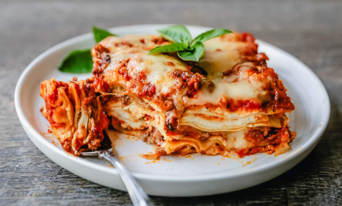
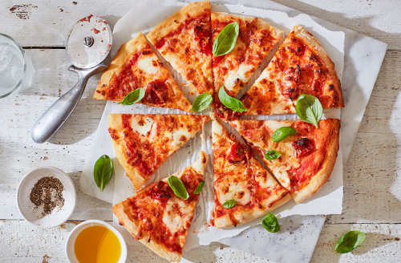

Lasagna

Description
Lasagne originated in Italy during the Middle Ages. The oldest transcribed text about lasagne appears in 1282 in the Memoriali Bolognesi ("Bolognesi Memorials"), in which lasagne was mentioned in a poem transcribed by a Bolognese notary; while the first recorded recipe was set down in the early 14th-century Liber de Coquina (The Book of Cookery). It bore only a slight resemblance to the later traditional form of lasagne, featuring a fermented dough flattened into thin sheets (lasagne), boiled, sprinkled with cheese and spices, and then eaten with a small pointed stick. Recipes written in the century following the Liber de Coquina recommended boiling the pasta in chicken broth and dressing it with cheese and chicken fat. In a recipe adapted for the Lenten fast, walnuts were recommended.
Ingredients
- ground meats
- tomato sauce
- vegetables
- cheese
- ricotta
- mozzarella
- parmesan
- spices
- garlic
- oregano
- basil
Steps
- Start by making the sauce with ground beef, bell peppers, onions, and a combo of tomato sauce, tomato paste, and crushed tomatoes. The three kinds of tomatoes gives the sauce great depth of flavor.
- Let this simmer while you boil the noodles and get the cheeses ready. We're using ricotta, shredded mozzarella, and parmesan -- like the mix of tomatoes, this 3-cheese blend gives the lasagna great flavor!
- From there, it's just an assembly job. A cup of meat sauce, a layer of noodles, more sauce, followed by a layer of cheese. Repeat until you have three layers and have used up all the ingredients.
- Bake until bubbly and you're ready to eat!
Porridge
Description
Porridge is a food made by heating or boiling ground, crushed or chopped starchy plants, typically grain, in milk or water. It is often cooked or served with added flavourings such as sugar, honey, (dried) fruit or syrup to make a sweet cereal, or it can be mixed with spices, meat or vegetables to make a savoury dish. It is usually served hot in a bowl, depending on its consistency. Oat porridge, or oatmeal, is one of the most common types of porridge. Gruel is a thinner version of porridge.
Ingredients
- grain
- milk
- water
- sugar
- salt
- oat
- honey
Steps
- For an oat of this world porridge, choose a quality and chunky rolled oat. (Do not let a chunky oat discourage you, it will still produce a creamy texture.) You will need 1/2 cup dried oats per one serving, which is then added to a saucepan.
- For how many servings you choose you to go with, you will to add equal portions of water, or double how many cups of dried oats you go with. So for one serving (1/2 cup oats) you will need one cup, two servings (1 cup dried oats) two cups, three servings (1 1/2 cup dried oats) three cups, and so on. Also feel free to use milk, 50:50 water and milk, or whichever ratio you wish.
- In a nonstick sauce pan, slowly bring oats and water to a boil, frequently stirring with a spurtle or the handle of of a wooden spoon.
- While the porridge is coming to a boil, add a pinch of salt and mix. But do not be discouraged by the salt, it adds depth to the porridge and will bring out the sweetness of any toppings!
- Once the porridge is brought to a boil, turn down the heat. Simmer and stir frequently for about 10 to 15 minutes, or until it has reached the consistency you desire. You can also add a splash of milk or water as needed for a runnier consistency.
- Annddd the fun part! Personalize the bowl of porridge to best fit your flavor and nutritional preferences. Top with fresh berries, chopped banana, a drizzle of maple syrup, sprinkles of cinnamon, and other favorites.
Pizza

Description
Pizza is a dish of Italian origin consisting of a usually round, flat base of leavened wheat-based dough topped with tomatoes, cheese, and often various other ingredients, which is then baked at a high temperature, traditionally in a wood-fired oven. A small pizza is sometimes called a pizzetta.
Ingredients
- Cheese
- Dough
- Flour
- Tomato
- Mozzarella
- Basil
- Salt
- Olive Oil
Steps
- Start with a medium bowl that's been lightly coated with olive oil. Add warm water (about 110 degrees F), dry yeast and sugar. Note: The activated yeast feeds on the sugar and makes the dough rise. In another bowl, combine flour and salt. Have a fork, cutting board, knife, pizza pan and rolling pin (optional) handy.
- In the bowl containing the flour and salt, make a well in the center and add the yeast. Tip: If the yeast doesn't foam, check the expiration date and water temperature (should be approximately 110 degrees F). Add the olive oil. Use a fork to pull the dry into the wet, then mix.
- When the dough starts to come together, get in there with your hands and knead it for a few minutes on a lightly floured board. Use the heel of your hand to push the dough down and forward. Give it a few turns. You're done when the dough is a little tacky.
- Place the kneaded dough into the oiled bowl, cover with plastic wrap and let it rise in a warm spot until it doubles in size. Tip: Chart the progress of the rising dough by using a marker on the plastic wrap to circle the size of the ball of dough at the beginning of the process. It can take anywhere from 1 to 2 hours for the dough to rise, depending on the recipe and ambient temperature.
- If the dough leaves an indentation when poked, it's ready.
- Once the dough has risen properly, use a knife to divide it. The larger the piece, the bigger the pizza; the smaller portions are easier to handle at home. Form into balls for individual pizzas, and place on a plate. Cover with a damp cloth. Let the balls of dough rest until you poke them and see an indentation.
- Sprinkle a pizza pan with a little semolina for good separation and a nutty crunch. Place a ball of dough in the center of the pan and spread it out, using a rolling pin or your hands. Spin it. Pull the dough to the edges of the pan to thin out the center. Add some more semolina for better separation. Make sure the thickness is even.
- Top the spread dough with your favorite ingredients and bake in a 500-degree F oven for approximately 10 minutes. Perfect pizza every time.